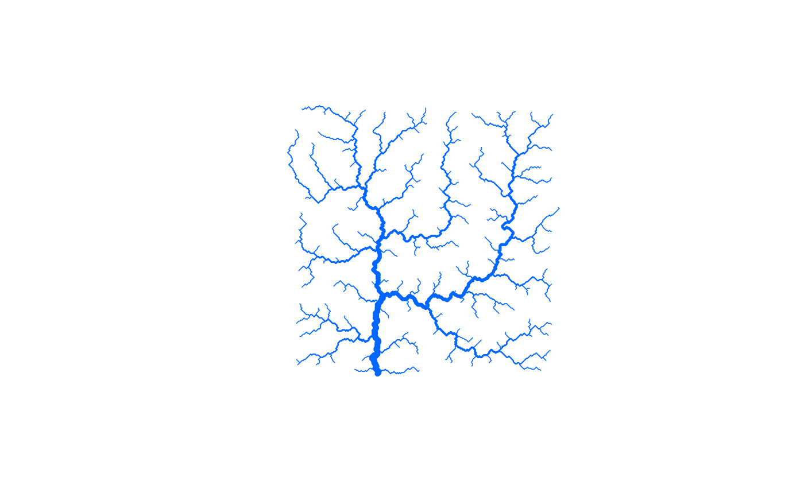
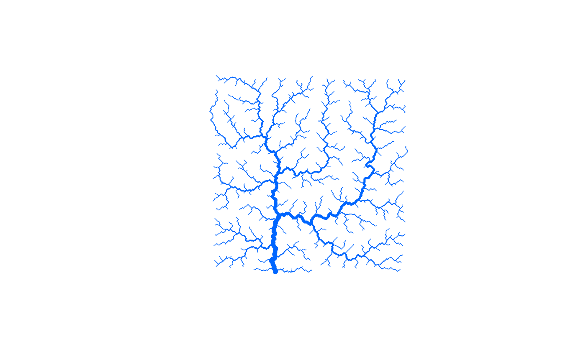
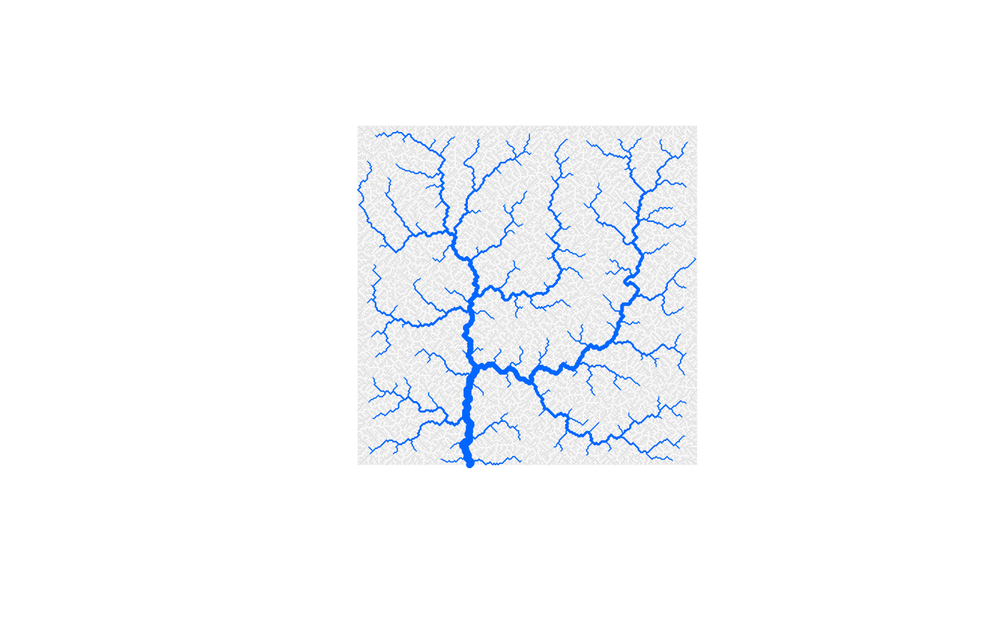

Draw an Optimal Channel Network
draw_simple_OCN.RdFunction that plots the non-aggregated OCN as calculated by create_OCN.
Usage
draw_simple_OCN(OCN, thrADraw = 0.002 * OCN$FD$nNodes *
OCN$cellsize^2, riverColor = "#0066FF", easyDraw = NULL,
min_lwd = 0.5, max_lwd = 5, add = FALSE)Arguments
- OCN
A
riverobject as produced bycreate_OCN.- thrADraw
Threshold drainage area value used to display the network.
- riverColor
Color used to plot the river.
- easyDraw
Logical. If
TRUE, the whole network is displayed, and pixels with drainage area lower thanthrADraware displayed in light gray. IfFALSE, only pixels with drainage area greater or equal tothrADraware displayed. Default isFALSEifOCN$nNodes <= 40000, andTRUEotherwise. Note that settingeasyDraw = FALSEfor large networks might slow down the process considerably.- min_lwd, max_lwd
Minimum and maximum values of line width used to display the OCN (actual line width is proportional to the square root of drainage area).
- add
Logical. If
TRUE, add to an already existing plot. Taken asFALSE(with a warning if a different value is supplied) if no graphics device is open.
Examples
# 1a) draw OCN with default settings
draw_simple_OCN(OCN_250_T)

# \donttest{
# 1b) same as above, but with decreased thrADraw
draw_simple_OCN(OCN_250_T, thrADraw = 0.001 * OCN_250_T$dimX * OCN_250_T$dimY)

# 1c) same as the first example, but include the portion of network
# with drainage area lower than thrADraw
draw_simple_OCN(OCN_250_T, easyDraw = FALSE) # this will take some seconds

# }